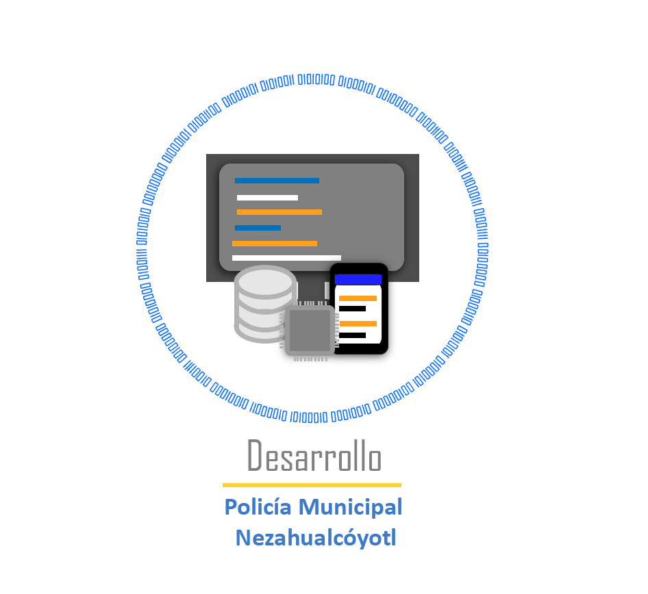

|
Titulo GenericoEste es un texto generico que carece de relevancia el significado de su contenido. This is the MySQL™ Reference Manual. It documents MySQL 8.0 through 8.0.22, as well as NDB Cluster releases based on version 8.0 of NDB through 8.0.20-ndb-8.0.20, respectively. It may include documentation of features of MySQL versions that have not yet been released. For information about which versions have been released, see the MySQL 8.0 Release Notes. MySQL 8.0 features. This manual describes features that are not included in every edition of MySQL 8.0; such features may not be included in the edition of MySQL 8.0 licensed to you. If you have any questions about the features included in your edition of MySQL 8.0, refer to your MySQL 8.0 license agreement or contact your Oracle sales representative. The MySQL™ software delivers a very fast, multithreaded, multi-user, and robust SQL (Structured Query Language) database server. MySQL Server is intended for mission-critical, heavy-load production systems as well as for embedding into mass-deployed software. Oracle is a registered trademark of Oracle Corporation and/or its affiliates. MySQL is a trademark of Oracle Corporation and/or its affiliates, and shall not be used by Customer without Oracle's express written authorization. Other names may be trademarks of their respective owners. The MySQL software is Dual Licensed. Users can choose to use the MySQL software as an Open Source product under the terms of the GNU General Public License (http://www.fsf.org/licenses/) or can purchase a standard commercial license from Oracle. See http://www.mysql.com/company/legal/licensing/ for more information on our licensing policies. |
|
The MySQL™ software delivers a very fast, multithreaded, multi-user, and robust SQL (Structured Query Language) database server. MySQL Server is intended for mission-critical, heavy-load production systems as well as for embedding into mass-deployed software. Oracle is a registered trademark of Oracle Corporation and/or its affiliates. MySQL is a trademark of Oracle Corporation and/or its affiliates, and shall not be used by Customer without Oracle's express written authorization. Other names may be trademarks of their respective owners. The MySQL software is Dual Licensed. Users can choose to use the MySQL software as an Open Source product under the terms of the GNU General Public License (http://www.fsf.org/licenses/) or can purchase a standard commercial license from Oracle. See http://www.mysql.com/company/legal/licensing/ for more information on our licensing policies. The MySQL™ software delivers a very fast, multithreaded, multi-user, and robust SQL (Structured Query Language) database server. MySQL Server is intended for mission-critical, heavy-load production systems as well as for embedding into mass-deployed software. Oracle is a registered trademark of Oracle Corporation and/or its affiliates. MySQL is a trademark of Oracle Corporation and/or its affiliates, and shall not be used by Customer without Oracle's express written authorization. Other names may be trademarks of their respective owners. The MySQL software is Dual Licensed. Users can choose to use the MySQL software as an Open Source product under the terms of the GNU General Public License (http://www.fsf.org/licenses/) or can purchase a standard commercial license from Oracle. See http://www.mysql.com/company/legal/licensing/ for more information on our licensing policies. |
 |